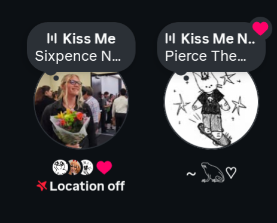

Hi Ash <3
You mean more to me than I should probably put into words, so here's a little playlist of songs that make me think of you:
Song Explanations:
-
Last Hope
The repetition of "Gotta let it happen" and "Gotta let go of control" is very similar to how I was feeling about love and dating before meeting you. A sense of relinquishing control and even losing hope, both very prevalent at that point.
-
crushcrushcrush
This song kind of speaks for itself, but clearly I developed quite the crush on you pretty early on. I especially like this here because "Nothing compares to a quiet evening alone" obviously reflects the 15-hour hangout. And to top it all off, the lyrics remain unsure of reciprocity, which we both still somehow felt at this point.
-
Daydreaming
This may be a little more interpretive of the song's actual meaning, but to me, it represents the moments when I find myself lost in thoughts of you, imagining our future together and cherishing the memories we've made so far. Not even together by this point, I couldn't stop thinking about you and ways to be with you and hangout as much as possible.
-
Iris
Again, a little interpretive, but this song reflects much of the longing and desire I felt towards you specifically (although, Iris is about just anyone in general, which isn't horribly untrue to how I felt).
-
Dear Maria, Count Me In
Dear Ash, count me in everything you do and everywhere you go. I love the way you perform and what you create, and it has always impressed me. Watching you make assets for Fearosis and seeing your OCs made me realize your talents and that you should be a star.
-
Thank You
TGIF might have been the best day of my life at that point lol. I think the moments I spend with you get better and better every day, but that day confirmed a future with you that changed my life. I think we can both agree this was an extremely impactful moment for our relationship and it was organized by you, so "Thank you".
-
Crave
I found Crave while creating this playlist. To me, the song represents the longing and desire to spend and cherish the moments together before they are gone. It feels to me like a reminder to enjoy the time we have together and never take it for granted. While it does suggest to enjoy the feelings before they are gone, I moreso see that as enjoying each individual moment we share as its own that each will come to an end. However, as long as we crave our experiences together, new moments to relish together will continue to come to us forever.
Older Gavin: This song is post-TGIF because, upon realizing our mutual feelings, it became impossible to not crave more, aka "Crave, to do it again, all again" and "I'm already missing it".
-
Risk
Little bit of OCD here. Around this point of the first dates, it was quickly clear that you were someone worth taking a risk on, but I may have want to move a little quicker than I should have. "Too soon to tell you 'I love you'".
-
All I Wanted
So at first pass and why the song was added, the message was clear, "All I wanted was you". But then I was thinking in retrospect, that the song only partially applies beyond that. It highlights wanting to take things slower and enjoy the slowness together, but (mostly because of you) we did enjoy the slower moments together before rushing into the relationship and I would not change anything about that. Except living with you immediately. My fault there.
-
Anna Molly
Anna Molly or 'Anomaly' reflects my feelings that you are an anomaly in my life in all the best ways. I truly never expected someone like you to randomly appear in my life. Before we met, there was a sort of cloud that always hung above my head and I felt lacking in any meaningful connections with the people around me (you know the people I was "friends" with before). I had often dreamed and longed to find this emotional link with someone special, as many people do. That first day I saw you with AJ, I could tell you were special, but of course, I did not realize how much so. So, once we began talking, and you showed how much you were capable of being this someone special, I knew that I could find myself with you and finally share something more meaningful. You have been an anomaly of care and kindness in my life, since the first day we talked about your roommates in the halls of the downtown campus.
Older Gavin: Also, the healthy process of getting together and communication we formed at this point is unfortunately an anomaly in itself.
-
Kiss Me
"Kiss me beneath the milky twilight" "Lead me out on the moonlit floor" "Silver moon's sparkling, so kiss me". This is pretty clearly a reflection of the walk we took that night and my feelings almost the entire time. I wanted to kiss you so bad, but I knew you had a plan, like you always do. And I love that about you.
-
Kiss Me Now

I did some research on this song. Vic wrote this for his wife to talk about how life moves too fast and sometimes you can miss the best moments waiting for the "perfect" moment. I think this is another very special song for me because I am always afraid of not being in the moment with you and enjoying what we have in it. Every moment with you is so special and I cherish every second, every kiss, every word, every hug, and every laugh.
Older Gavin: This follows Kiss Me because I was like "Kiss me, kiss me now" after that walk lol.
-
Proof
To me Proof is about how love is more than the words. The proof of love is in the actions, the small gestures, and the moments shared together. So before we said we loved each other, I knew you loved me because of the way you always made me feel valued, supported, and cherished.
-
Happy Together
Since we were basically living together at this point, this song felt very fitting. It captures the joy and contentment of being with you all of the time.
-
Make Me Wanna Die
While the title may be a little dramatic, the song reflects the intensity of my feelings for you. I feel like I have a many doubts about how good I could be in a relationship, but I had never experienced such a healthy one before. This song reflected how much I feared not being enough for you.
Pre-TGIF
TGIF
Post-TGIF
Kiss
Pre-L Word
Love and mooshy goosh
By this point, the songs are all quite romantic and heartfelt for reasons pretty self-explanatory. I could spend days writing about you and what everything that reminds me of you means to me. But I realized that I would never stop writing because you exist in everything I do and everything reminds me of you. I love you more than words can express and actions can show. But I hope you enjoy the explanations of our early relationship in the songs I have picked. I am excited for what the future holds for us.